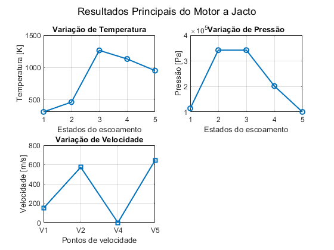

Contents
- Cálculo de parâmetros de um motor a jacto
- 1) Definição dos parâmetros e constantes
- 2) Conversão de unidades e cálculo de calores específicos
- 3) Condições na entrada do motor (Ram Effect)
- 4) Cálculo de P2, T2 isentrópico e T2 real
- 5) Cálculo das entalpias h1 e h2
- 6) Balanço energético do compressor
- 7) Pressão na câmara de combustão
- 8) Balanço energético na turbina
- 9) Nozzle (expansão até pressão ambiente)
- 10) Áreas de entrada e de saída
- 11) Empuxo (Thrust)
- 12) Consumo Específico de Combustível (TSFC)
- 13) Apresentação dos resultados
- 14) Gráficos em 4 subplots
Cálculo de parâmetros de um motor a jacto
Este script calcula os principais parâmetros (temperaturas, pressões, velocidades, empuxo e consumo específico) de um motor a jacto idealizado. As descrições de cada etapa de cálculo estão organizadas em secções.
clc
close all
clearvars
1) Definição dos parâmetros e constantes
- RP = Razão de pressão do compressor
- mdot_ar = caudal mássico (kg/s)
- T3_C = Temperatura de combustão em ºC
- AF_racio = Razão ar/combustível
- V1_kmh = Velocidade de voo em km/h
- Ta_C = Temperatura ambiente em ºC
- P1_bar = Pressão ambiente em bar
- eta_c = Rendimento (eficiência) do compressor
- eta_t = Rendimento (eficiência) da turbina
- gamma_frio e gamma_quente = Coeficientes adiabáticos (ar frio e gases quentes)
- R = Constante dos gases (J/(kg·K))
RP = 3; mdot_ar = 2.0; T3_C = 990; AF_racio = 71.3; V1_kmh = 540; Ta_C = 25; P1_bar = 1; eta_c = 0.75; eta_t = 0.85; gamma_frio = 1.4; gamma_quente = 1.333; R = 287;
2) Conversão de unidades e cálculo de calores específicos
- Converte-se T3_C (°C) para Kelvin: T3
- Calculam-se os calores específicos a pressão constante do ar frio e dos gases quentes: cp_frio e cp_quente
T3 = T3_C + 273.15; % Conversão de ºC para K
cp_frio = (gamma_frio * R) / (gamma_frio - 1);
cp_quente = (gamma_quente * R) / (gamma_quente - 1);
3) Condições na entrada do motor (Ram Effect)
- Converte-se V1_kmh (km/h) para m/s: V1
- Converte-se Ta_C (°C) para K: Ta
- Converte-se P1_bar (bar) para Pa: Pa
- Calcula-se T1, considerando a compressão dinâmica (ram effect)
- Calcula-se P1, assumindo processo quase isentrópico
V1 = V1_kmh * 1000 / 3600; % km/h para m/s Ta = Ta_C + 273.15; % ºC para K Pa = P1_bar * 1e5; % bar para Pa T1 = Ta + (V1^2 / (2 * cp_frio)); P1 = Pa * (T1 / Ta)^(gamma_frio / (gamma_frio - 1));
4) Cálculo de P2, T2 isentrópico e T2 real
- P2 = P1 * RP
- T2 = Temperatura real (considerando o rendimento do compressor, eta_c)
- V2 = Velocidade após o compressor
P2 = P1 * RP; T2s = T1 * (P2 / P1)^((gamma_frio - 1) / gamma_frio); T2 = T1 + (T2s - T1) / eta_c; V2 = sqrt(V1^2 + 2 * cp_frio * (T2 - T1));
5) Cálculo das entalpias h1 e h2
As entalpias são dadas por: h1r = cp_frio * T1 h2r = cp_frio * T2 Não se adiciona a componente cinética neste termo (meia velocidade ao quadrado), pois é tratada separadamente.
h1r = cp_frio * T1; h2r = cp_frio * T2;
6) Balanço energético do compressor
O trabalho consumido pelo compressor é: W_dot_c = - (mdot_ar * (h1r - h2r)) Sinal negativo indica que o sistema (ar) recebe trabalho do exterior.
W_dot_c = -(mdot_ar * (h1r - h2r));
7) Pressão na câmara de combustão
Admite-se perda de carga desprezável na câmara de combustão. Logo: P3 = P2
P3 = P2;
8) Balanço energético na turbina
A turbina fornece o trabalho necessário ao compressor (em regime estacionário): W_dot_t = W_dot_c A temperatura de saída T4 resulta da subtracção do trabalho específico transformado em variação de entalpia. Calcula-se também T4s (isentropicamente) e a pressão P4.
W_dot_t = W_dot_c; T4 = T3 - W_dot_t / (mdot_ar * cp_quente); T4s = T3 + (T4 - T3) / eta_t; P4 = P3 * (T4s / T3)^(gamma_quente / (gamma_quente - 1));
9) Nozzle (expansão até pressão ambiente)
Expansão dos gases de P4 até Pa. A temperatura final T5 é calculada isentropicamente: T5 = T4 * (P5 / P4)^((gamma_quente - 1)/gamma_quente) A velocidade de saída V5 é obtida pela diferença de entalpia convertida em energia cinética.
V4 = 0; % Supondo velocidade nula à saída da turbina (para simplificar)
P5 = Pa;
T5 = T4 * (P5 / P4)^((gamma_quente - 1) / gamma_quente);
V5 = sqrt(V4^2 + 2 * cp_quente * (T4 - T5));
10) Áreas de entrada e de saída
- rho1 = Pa / (R * Ta)
- A1 = mdot_ar / (rho1 * V1)
- rho_5 = P5 / (R * T5)
- A5 = mdot_ar / (rho_5 * V5)
rho1 = Pa / (R * Ta); A1 = mdot_ar / (rho1 * V1); rho_5 = P5 / (R * T5); A5 = mdot_ar / (rho_5 * V5);
11) Empuxo (Thrust)
Thrust = mdot_ar * (V5 - V1)
Thrust = mdot_ar * (V5 - V1);
12) Consumo Específico de Combustível (TSFC)
mdot_combustivel = mdot_ar / AF_racio TSFC = mdot_combustivel / Thrust
mdot_combustivel = mdot_ar / AF_racio; TSFC = mdot_combustivel / Thrust;
13) Apresentação dos resultados
Os principais resultados são mostrados no Command Window.
fprintf('Temperatura estática à saída do nozzle (T5): %.2f K\n', T5); fprintf('Velocidade do jacto à saída do nozzle (V5): %.2f m/s\n', V5); fprintf('Área de entrada do motor (A1): %.4f m²\n', A1); fprintf('Área de saída do motor (A5): %.4f m²\n', A5); fprintf('Empuxo (Thrust): %.2f N\n', Thrust); fprintf('Consumo específico de combustível (TSFC): %.2e kg/(N·s)\n', TSFC);
Temperatura estática à saída do nozzle (T5): 949.24 K Velocidade do jacto à saída do nozzle (V5): 644.77 m/s Área de entrada do motor (A1): 0.0114 m² Área de saída do motor (A5): 0.0085 m² Empuxo (Thrust): 989.55 N Consumo específico de combustível (TSFC): 2.83e-05 kg/(N·s)
14) Gráficos em 4 subplots
1. Variação de Temperatura: T1, T2, T3, T4, T5 2. Variação de Pressão: P1, P2, P3, P4, P5 3. Variação de Velocidades: V1, V2, V4, V5 4. Empuxo (Thrust), representado como uma barra única
T_array = [T1, T2, T3, T4, T5]; P_array = [P1, P2, P3, P4, P5]; Velocidades = [V1, V2, V4, V5]; figure('Name','Parâmetros Principais do Motor a Jacto','NumberTitle','off'); % Subplot 1: Temperatura subplot(2,2,1) plot(1:5, T_array, '-o','LineWidth',1.5,'MarkerSize',6) title('Variação de Temperatura') xlabel('Estados do escoamento') ylabel('Temperatura [K]') xticks(1:5) grid on % Subplot 2: Pressão subplot(2,2,2) plot(1:5, P_array, '-o','LineWidth',1.5,'MarkerSize',6) title('Variação de Pressão') xlabel('Estados do escoamento') ylabel('Pressão [Pa]') xticks(1:5) grid on % Subplot 3: Velocidade subplot(2,2,3) plot(1:length(Velocidades), Velocidades, '-s','LineWidth',1.5,'MarkerSize',6) title('Variação de Velocidade') xlabel('Pontos de velocidade') ylabel('Velocidade [m/s]') xticks(1:4) xticklabels({'V1','V2','V4','V5'}) grid on sgtitle('Resultados Principais do Motor a Jacto')
Observa-se que a temperatura alcança o seu valor máximo na câmara de combustão (T3) e diminui ao passar pela turbina (T4), enquanto a pressão é elevada pelo compressor (P2) e depois reduzida até próximo da pressão ambiente no nozzle (P5). Nas velocidades, nota-se que o escoamento acelera significativamente até à saída (V5). Finalmente, o empuxo (Thrust) quantifica a força de propulsão gerada pelo motor.